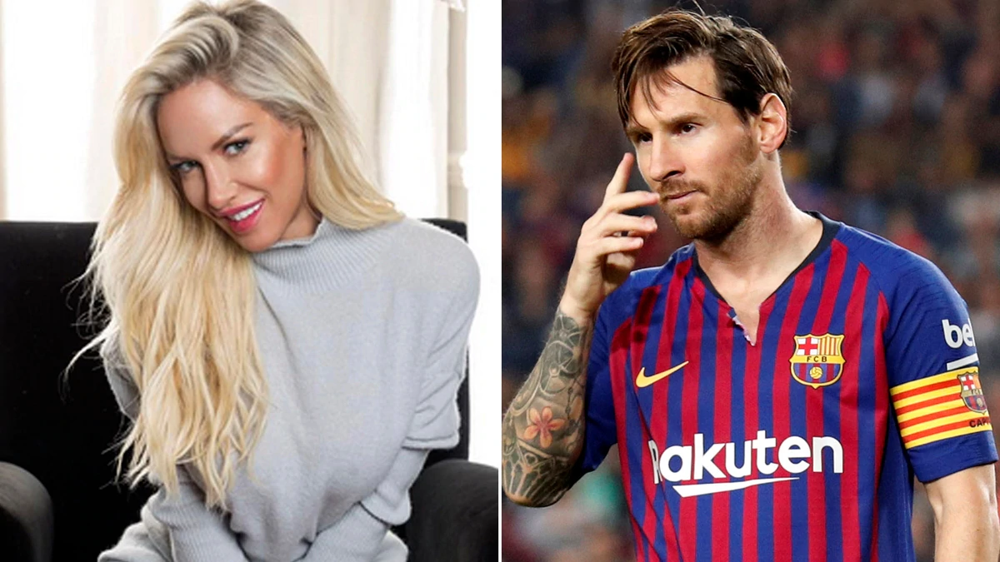

|
|
Personal Life
The first official girlfriend of the famous football player was the Argentinean Macarena Lemos, with whom Lionel had relationship when he was 19. The girl's father introduced Macarena to Lionel, but their relations did not last long. Messi with spent a lot of time on a football field, and the girl’s parents considered that their daughter deserves better man.
In 2006, Messi started a romance with model and "Playboy" star Luisiana Salazar. But their relationship did not last long.

Lionel’s old friend Antonella Rokuzzo made the footballer happy. She became his wife. Footballer met this charming girl in his childhood, they lived in the same city, and Messi often played football with her brothers. In 2009, the famous football player confirmed their romance in an interview. He said that he has a girlfriend with whom he is very happy. At the same time, the couple was seen at the Carnival in Sitegez.
On November 2, 2012, their son Thiago was born. And in April 2015, the famous football player confirmed that their family will have another baby.
At the end of 2012 sports magazine "Ole" published a photo session of the Argentinean model Claudia Chiardone, which she devoted to her favorite football player Lionel Messi. The forward of "Barcelona" did not react to this statement, and his girlfriend Antonella told that she did not see anything special in this photo session.

On June 30, 2017 Lionel Messi married Antonella Rokuzzo. Their wedding was held in Rosario. The event was magnificent and luxurious – Increased security measureswere taken to guard the celebration. The wedding was attended by 250 guests, including world football stars and other celebrities. In October 2017, the couple reported that they were expecting a baby.
|